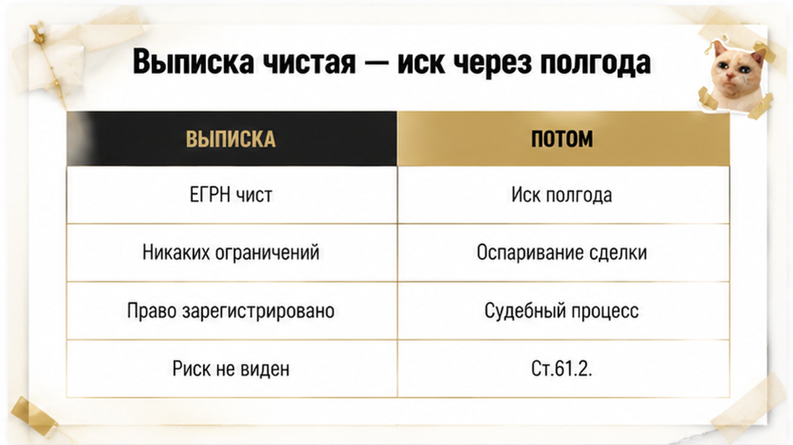
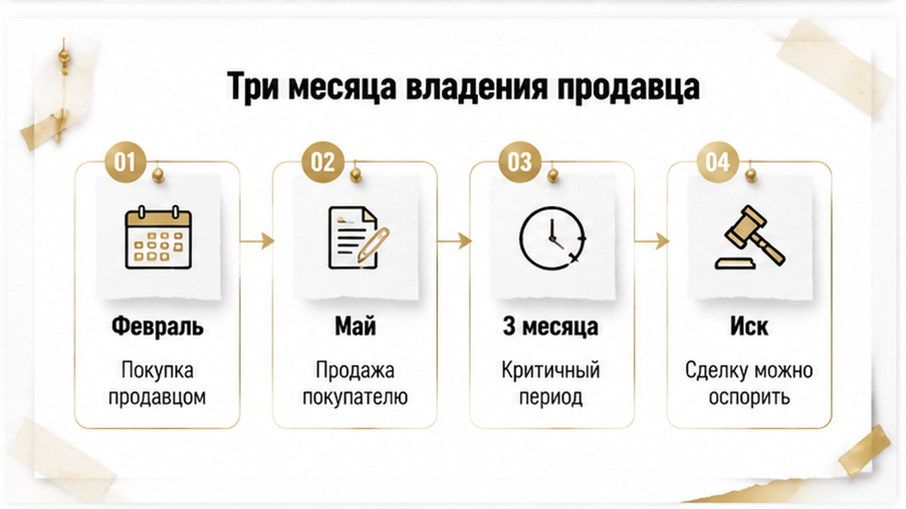
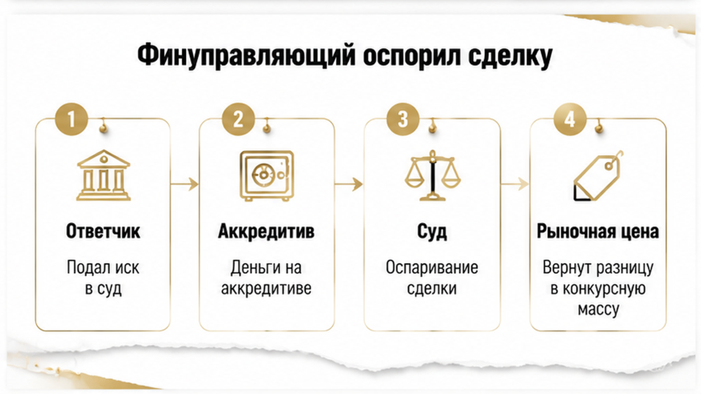

Покупатель заехал в квартиру, доделал ремонт, повесил люстру — а через полгода достал из почтового ящика конверт из арбитражного суда. Выписка ЕГРН перед сделкой была идеально чистой: один собственник, ни ареста, ни ипотеки, ни запрета на регистрацию. Деньги шли через аккредитив, Росреестр зарегистрировал переход права без единого замечания. И вот теперь финансовый управляющий продавца требовал признать договор купли-продажи недействительным — продавец ушёл в личное банкротство. Эту историю мне принесли уже с иском на руках, и она про то, чего чистая выписка не показывает никогда.
Я — Святослав Шакин, The Риэлтор в Тюмени. Лично веду сделку от звонка до регистрации.
Полный разбор кейсов и как я это ловлю до аванса — в Telegram и MAX.

Сделка выглядела как учебная. Вторичка в Тюмени, один собственник, свежая выписка ЕГРН: обременений нет, аресты не наложены, запретов на регистрационные действия нет. Расчёт — через аккредитив, то есть банк держит деньги и раскрывает их после регистрации. Росреестр отработал в срок, покупатель получил свою строку в ЕГРН и поехал заказывать натяжные потолки.
Через шесть месяцев в ящике лежал конверт. Финансовый управляющий продавца оспаривал тот самый договор купли-продажи. Основание — статья 61.2 закона о банкротстве: сделка причинила вред имущественным правам кредиторов. Проще говоря: пока человек шёл к банкротству, он вывел из своей собственности квартиру, а кредиторам не досталось ничего.
Первая реакция покупателя понятная: «у меня же выписка чистая была, я её заказывал сам». Была. И она не соврала.
Вот здесь ломается самая распространённая иллюзия рынка. Выписка ЕГРН — это не гарантия и не справка о человеке. Это снимок объекта на конкретную дату и час. Она честно отвечает на вопрос «что записано в реестре прямо сейчас» и абсолютно не отвечает на вопрос «что будет с продавцом через полгода». Будущее банкротство в реестре недвижимости не отражается. Долги перед банками, микрозаймы, поручительства, субсидиарная ответственность по чужому бизнесу — ничего этого в графе «обременения» нет.
Реестр вообще умеет удивлять уже после подписания — я разбирал случай, когда ипотеку одобрили, а регистрацию отменили из-за одной строки в ЕГРН. Здесь история злее: регистрацию прошли, ключи получили, а угроза пришла не из реестра, а из арбитража.
Когда я веду сделку, выписка для меня не финиш проверки, а её начало. Чистые обременения означают только одно: можно двигаться дальше и смотреть на продавца, а не на квартиру.

Дальше мы заказали второй документ — выписку о переходе прав на объект. Это другая бумага, и она рассказывает не про сегодняшний день, а про биографию квартиры: кто владел, с какого числа, на каком основании, когда право прекратилось.
И картина сложилась мгновенно. Продавец купил эту квартиру в феврале. Продал в мае. Три месяца владения, основание перехода — договор купли-продажи. Не наследство, не дарение от родственника, не приватизация. Купил и почти сразу вышел.
Сам по себе короткий срок владения не делает сделку недействительной. Это важно проговорить, потому что в интернете любят пугать: «меньше трёх лет — не бери». Так не работает. Человек имеет полное право купить квартиру и продать её через месяц, и закон ему это не запрещает.
Короткий срок — это индикатор. Красная лампочка, которая говорит: остановись и выясни, какой из двух сценариев перед тобой.
Сценарий первый — флип. Инвестор купил дешевле, сделал косметику, вышел дороже. Обычная работа, рисков для покупателя минимум, всё объяснимо: видно вложение, видна логика цены, продавец спокойно рассказывает, где брал деньги и зачем продаёт.
Сценарий второй — человек избавляется от имущества. Долги накрывают, кредиторы близко, и квартира уходит из собственности, пока её не забрали в счёт обязательств. Здесь короткий срок владения перестаёт быть безобидной деталью и становится частью будущего иска.
Отличить один сценарий от другого можно ещё до аванса. Я смотрю связку: срок владения, основание приобретения, цену покупки и цену продажи, поведение продавца при вопросах о причине продажи. Плюс открытые источники — реестр банкротств, база судебных дел, исполнительные производства. Это не тайное знание, это полчаса работы, которые в нашем случае никто не сделал.
Особенно громко лампочка звенит, когда короткое владение идёт в комплекте с щедрой скидкой. Про такой набор я уже писал отдельно: скидку два миллиона обещали, а в квартире прятали риск. Дешевле рынка — это всегда плата за что-то, и покупатель узнаёт за что уже потом.

Иск ушёл в арбитражный суд, и покупатель — тот самый человек с новыми потолками — стал ответчиком. Не свидетелем, не третьим лицом. Ответчиком по делу, где на другой стороне финансовый управляющий и кредиторы, которым нужно вернуть квартиру в конкурсную массу.
Защита строилась на трёх опорах.
Первая — аккредитив. Деньги шли через банк, движение видно по документам от начала до конца: кто внёс, сколько, когда раскрылось. Не «передал в машине под расписку», а прозрачный банковский след.
Вторая — цена. Она была рыночной. Не подарочной, не «по-родственному», без занижения в договоре. То есть встречное предоставление было равноценным, и вреда кредиторам сделка не нанесла: в конкурсную массу продавца пришли живые деньги в полном объёме.
Третья — отсутствие связей. Покупатель и продавец не родственники, не коллеги, не партнёры по бизнесу, не знакомые через знакомых. Значит, покупатель не мог знать о признаках неплатёжеспособности продавца — он добросовестный приобретатель, а не участник схемы по выводу актива.
Сделку сохранили. Квартира осталась за покупателем.
Только цена этого «осталась» — год судов, счёт юриста и нервы, которые никто не компенсирует. Год, в котором ты живёшь в квартире и не знаешь, твоя она или нет. Год, в котором нельзя спокойно её продать или заложить, потому что спор идёт.
А теперь неприятная часть. Убери из этой сделки любую из трёх опор — и финал другой. Наличные без банковского следа, где доказать оплату можно только бумажкой от продавца. Занижение суммы в договоре ради налога. Хоть какая-то связь между сторонами, которую суд прочитает как осведомлённость. При таком наборе квартиру забирают в конкурсную массу, а покупатель встаёт в очередь кредиторов за своими деньгами. Очередь, в которой обычно ничего не остаётся.
Про то, чем заканчивается расчёт «по-человечески», у меня есть отдельный разбор: расписку на квартиру написали, а денег на счёте нет. В споре о банкротстве такая расписка весит примерно ничего.
И вот вопрос, на который каждый отвечает сам: вы бы взяли эту квартиру, зная только чистую выписку и три месяца владения продавца — или развернулись бы на этапе аванса?